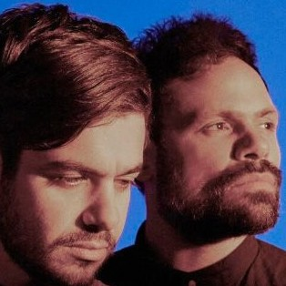
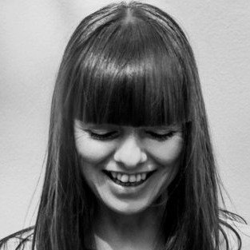
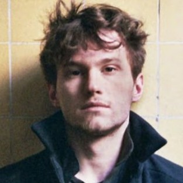

After 6 years of finance, investment banking / M&A @ J.P. Morgan and private equity @ Cinven, I decided to follow my entrepreneurial ambitions and start Solvd.ai. We're building a decision algorithm that helps eliminate the paradox of choice in online shopping
See for yourself|  |
Tale of UsTale Of Us is the new unique Berlin based sound scape project of Carmine Conte & Matteo Milleri. This tale dawns in Milan, where Karm and Matteo met at a very young age. The Lombardic capital will turn out to be the preface of their success story as they now reside in Berlin, their inspirational verge. |
|  |
MiraOften called the Queen of Berlin, Mira avoids the spotlight and instead focusses on quality and true artistic expressions. |
|  |
David AugustOne of the most exciting emerging voices in electronic music, David August has, at just 25 years old, continually refused to conform. He has released music on labels spanning underground hothouse Innervisions and Diynamic and remixed the likes of Max Cooper and The Acid. |